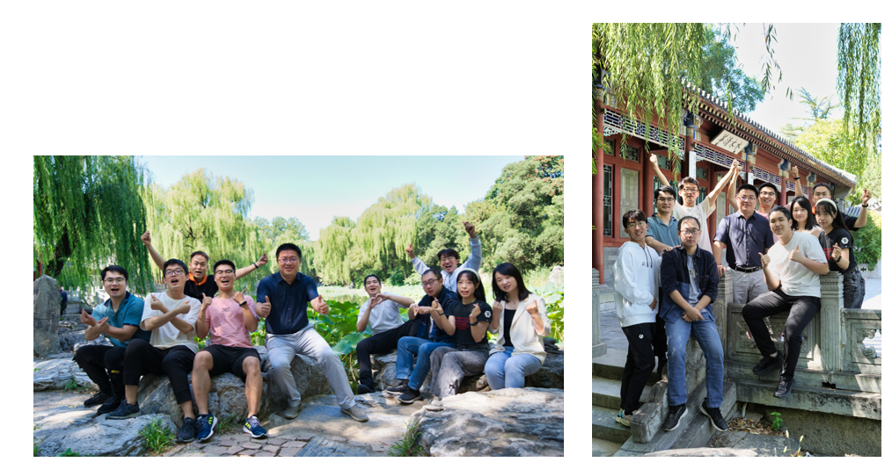

招聘博士后拟从事研究方向: （1）结构振动视觉测量； （2）基于多传感器融合的结构三维重建。 招聘要求: （1）已经获得博士学位或即将获得博士学位，符合清华大学博士后基本申请条件； （2）有计算机视觉、深度学习、SLAM算法开发和应用经验者最佳； （3）熟悉光学测量、有激光点云数据处理理论和实践基础的优先考虑； （4）热爱科研工作，有独立的科研能力。有良好的沟通能力和团队协作精神。 薪酬待遇： 课题组鼓励博士后申报水木学者等创新人才计划、国家博后基金等，相关获批经费归个人支配。博士后按照国家和清华大学博士后规定享受相关待遇，为博士后营造全身心科研的良好环境。博士后研究期限两年。 联系人：张熠 E-Mail：zhang-yi@tsinghua.edu.cn 有意申请者，请将简历等应聘材料以附件形式发送至上述邮箱地址（邮件主题：博士后+姓名+专业+学校）
Welcome to our lab!